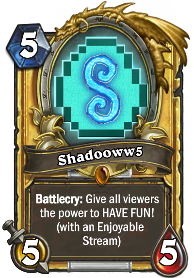

Hearthstone Stream!

Kedden Hearthstone Stream este 21.00-tól!
Befejezzük a múltkor elkezdett arénakört, aztán gold-nyereménytől függően lehetséges, hogy belevágunk még egy körbe!
Ezután kis control Warri és combo Druid pakli próbálgatás lesz standarban.
Ha ezt is megunnánk, megyünk combo-deckezni wildba!
Befejezzük a múltkor elkezdett arénakört, aztán gold-nyereménytől függően lehetséges, hogy belevágunk még egy körbe!
Ezután kis control Warri és combo Druid pakli próbálgatás lesz standarban.
Ha ezt is megunnánk, megyünk combo-deckezni wildba!